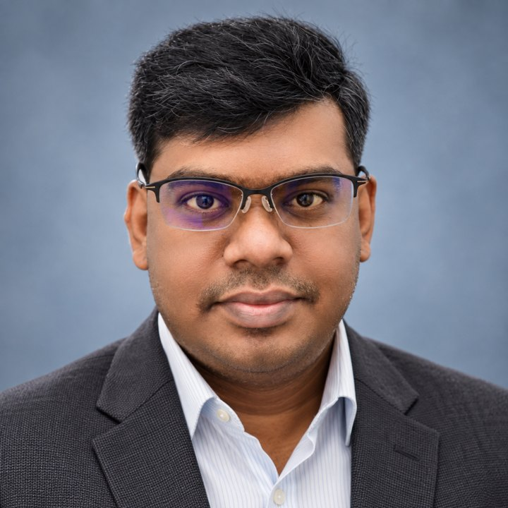

Building AI that sees, senses and cares.
Assistant Professor at SSN College of Engineering, and founder of Shinkai Labs.

A student from my group joins Kyushu University on the JST Lotus (Basic) Program.
Selected by the Japan Science and Technology Agency (JST), the student opens a research collaboration with Kyushu University, extending the India and Japan research ties that began during my years at Keio.
- Service
Session Chair, IEEE EMBC 2026, Toronto
Chairing a session at the 48th Annual International Conference of the IEEE Engineering in Medicine and Biology Society, where two of my papers also appear.
- Grant
IEEE ComSoc Travel Grant for ICC 2026, Glasgow
Awarded USD 1,930 to present our work on non-invasive fetal ECG extraction using deep learning and earth mover’s distance.
- Copyright
Shinkai Labs Drone Detection and Tracking Platform registered
Granted by the Copyright Office, Government of India (Reg. No. SW-2026023145).
- Papers
Seven conference papers accepted
At IEEE EMBC (two), IEEE ICC, IEEE CICN, IEEE SPACE, CVIP and ICETCI, covering fetal ECG, few-shot medical anomaly detection, topology-preserving segmentation and radar tracking.
Six lines of research
Machine learning where the signal is weak, the data is scarce and the stakes are clinical, from the lab bench to deployed products.
Biomedical signal processing
Non-invasive fetal ECG extraction from abdominal recordings with diffusion models, dynamical priors and optimal transport. DST-SERB funded work on fetal arrhythmia.
Medical image analysis
Cardiovascular risk from fundus images and ECG, Alzheimer’s classification on 3D MRI with Vision Mamba and ViTs, and topology-preserving segmentation.
Few-shot and anomaly detection
Vision and language adapters with learnable text anchors for few-shot medical anomaly classification, built for settings with very few labelled cases.
Infrared sensing and activity
Privacy-preserving activity and fall detection with low-resolution infrared array sensors and hybrid CNN-LSTM and CGAN models. The core of my Keio Ph.D.
Detection and tracking
Drone detection and tracking, and radar tracking with neural combinatorial fusion and calibrated uncertainties, shipped through Shinkai Labs.
Edge AI and industrial vision
Models on Raspberry Pi and NVIDIA Jetson; crack, rust and fault detection for railway and facade inspection with Raspect and Alstom.
From Keio to Chennai
Academia, industry and a startup, in that order and now at once.
- Spoken languages
- English, Tamil, Japanese
- Frameworks
- PyTorch, TensorFlow, Keras, OpenCV, scikit-learn, NumPy, Pandas, Matplotlib, Qiskit
- Programming
- Python, Dart, C and C++, Julia, R, LaTeX
- Systems
- NVIDIA Jetson, Raspberry Pi, IoT, ROS, OpenStack
- Beyond code
- Grant writing, intellectual property, research supervision, industry consultation
Assistant Professor
Teaching and supervising research in machine learning, computer vision and AI for healthcare. Publishing at IEEE ICC, EMBC and SPACE.
Founder and CEO
AI product research in computer vision, drone detection and tracking, and digital health. Copyrighted software (Python, Dart) with ML integration; industry partnerships in inspection and healthcare AI.
Assistant Professor
Founded and led the Centre of Excellence in IoT and AI Healthcare. Mentored students from undergraduate to Ph.D., ran the DST-SERB fetal arrhythmia project and consulted on railway and facade inspection.
Computer Vision and ML Engineer
Deep learning pipelines for visual recognition in an industrial research setting.
MEXT Scholar and Ph.D. Researcher
Infrared-array sensing, hybrid deep learning (CNN-LSTM, CGAN) and edge deployment for activity and fall detection.
Operations Officer
Research Fellow
| Years | Degree and school |
|---|---|
| 2019-22 | Ph.D., Engineering, Keio University, JapanActivity and fall detection for AI healthcare using infrared array sensors and deep computer vision |
| 2023-24 | PG Diploma, IPR Law, National Law School of India University |
| 2014-16 | M.Tech., CSE, Pondicherry UniversitySecure sharing of medical data in a hybrid cloud |
| 2008-12 | B.Tech., CSE, NIT Tiruchirappalli |
| Years | Role |
|---|---|
| 2023-24 | Centre of Excellence, IoT and AI Healthcare LabFounded and led strategy, industry and academia collaboration, budgeting and infrastructure |
| Ongoing | Research supervisionUG, master’s and Ph.D. students in AI healthcare and medical imaging |
| Ongoing | Faculty developmentFDPs and training in ML, computer vision and healthcare AI |
| 2023-24 | Industry consultationRailway inspection AI (Raspect, Alstom); facade monitoring (Raspect) |
Twenty-one papers and abstracts
Journal articles, peer-reviewed conference papers and abstracts, newest first.
Grants, copyrights and chairs
| Years | Award | Amount |
|---|---|---|
| 2026 | IEEE ComSoc Travel GrantICC 2026, Glasgow | USD 1,930 |
| 2024-27 | DST-SERB GrantFetal arrhythmia detection | INR 2.2M |
| 2019-22 | KLL Research GrantKeio University | JPY 1.8M |
| 2018-22 | MEXT ScholarshipGovernment of Japan | |
| 2014-16 | NHFDC Foundation ScholarshipGovernment of India | |
| 2008-12 | Post-Matric ScholarshipGovernment of India | |
| 2021 | ICM English Session Encouragement AwardIEICE, Japan |
| Year | Conference |
|---|---|
| 2026 | IEEE EMBC 2026Toronto, Canada |
| 2024 | BITMDM 2024Nagaland University |
| 2024 | ICAT 2024NUST, Muscat, Oman |
| 2024 | IEEE CSNT 2024Jabalpur |
| 2023 | IEEE CSNT 2023Bhopal |
| Year | Work and registration |
|---|---|
| 2026 | Shinkai Labs Drone Detection and Tracking PlatformSW-2026023145, Python and Dart |
| 2025 | Sulabh: Disability Indexing AppSW-20217/2025, AI-based disability assessment |
| 2024 | Hriday: ECG Tagging AppSW-19736/2024, ECG tagging and clinical support |
| Year | Talk and host |
|---|---|
| 2023 | Infrared Imaging in HealthcareIEEE CSNT 2023, Bhopal |
| AI for Everyone, and Recent Advances in AIPATH, New Delhi | |
| AI in Micro-GridDayananda Sagar College of Engineering | |
| Image Processing tutorialNagaland University |
Write to me
Open to research collaborations, student supervision, industry projects in healthcare and vision AI, and India and Japan academic exchange.
K. A. Muthukumar, Ph.D.SSN College of Engineering, Chennai, and Shinkai Labs
- GitHub
- github.com/kamuthukumar
- linkedin.com/in/muthukumarka